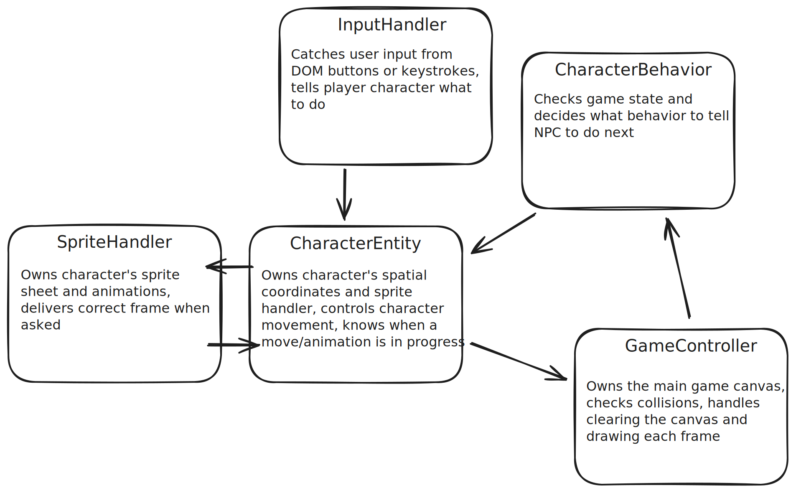
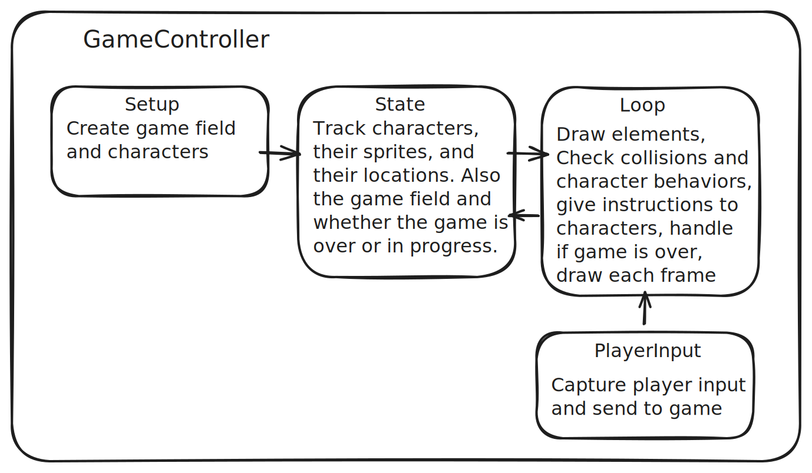

I was living in New York and inspired by my environment...
Having spiteful fantasies about the pedestrians in my way.
Back in 2015 I taught myself how to code with Udemy videos on Swift so I could make a game where you're a banana peel crawling around New York City, trying to make people step on you and wipe out.
I made one level of The Wild Bunch, but I hardcoded all the assets and game logic. That meant nothing I'd built was multipurpose. It meant I would have had to rewrite the entire game to make a second level. It was a painful lesson on why scalable code is important.
In 2025 I wanted to get back into coding, and instead of Udemy I talked my cousin into running a one-person bootcamp. We chose this page as my first challenge. I still had all the sprites I'd animated. I could get it working again with no frameworks or libraries, just the <canvas> HTML element and vanilla Javascript.
It took me a stupid amount of time reading <canvas> documentation to make this 40x40 pixel png show up in the <canvas> element, but you can just push a button.
You may notice how blurry and ugly it is. That's why you add this code:
ctx.imageSmoothingEnabled = false; // Disable smoothing
ctx.mozImageSmoothingEnabled = false; // For Firefox support
ctx.webkitImageSmoothingEnabled = false; // For Safari/Chrome support
ctx.msImageSmoothingEnabled = false; // For IE/Edge support
I can't rest on my laurels.
There are javascript game engines out there that would make this a lot faster and easier. But this is all about learning how basic elements work, and learning how <canvas> works, specifically. Before starting this, I didn't realize that all those engines and libraries are built on top of the <canvas> element. So that's cool, I'm learning. And I know enough Javascript to puzzle this out!
I started separating things out into functions. Now there's a sprite function and a canvas function. You can click to advance the banana through its animation frames:
Here's the banana truckin on its own:
Except yuck, sometimes he flashes when the canvas clears for a new frame. If I draw the new frame, THEN clear the canvas, THEN redraw, it looks a little bit better. But actually, the way I've written it means the script is loading a png image from the server every frame. No wonder it's laggy. No wonder people use sprite sheets.
But let's not get ahead of ourselves. I hadn't figured that loading was the issue yet, so I tried fixing the flashing by superimposing the new frame on the previous frame before clearing both and drawing the new frame again. The refresh loop:
banana_animation.drawFrame(banana_canvas.ctx, 0, 0, 200); // sprite function draws new frame into the canvas rendering context
banana_canvas.ctx.clearRect(0, 0, 200, 200); // clears rendering context (wipes screen)
banana_animation.drawFrame(banana_canvas.ctx, 0, 0, 200); // draws frame again
banana_animation.nextFrame(); // advances framecounter by 1
Yes... that means it's loading the same frame from the server twice. Do you see a difference between the animation above (no overlay) and the one below using this code? Sometimes I do, sometimes I don't.
You might notice the animation is sometimes in an orderly loop and sometimes weird! Also, if you scroll the page up and down a little, it starts dropping frames.
That's because I'd forgotten Javascript classes existed, so I was just writing and using functions as if they were classes. I didn't realize it until things broke in a very weird way (later), but you can see the difference using these buttons to change how the animations in the frame canvas above are handled.
The difference between using functions and using classes is that when both animated bananas use the function, it's like they're both sharing food on the same plate, food being their animation frames. When they use a class for their animation, they each have their own plate (aka set of frames).
I think.
I was also using var to define variables, instead of const and let, so I got to learn about how var's wacky scoping was messing me up. Why was I using it? Documentation says it hasn't been the right thing to use since 2015, and I didn't even know Javascript then. I probably picked it up from old examples on StackExchange.
Things I liked about var:
Moving on (still without fixing the functions thing yet)...
I made a entity object (actually a function) that possesses the animation (messed up because of misusing functions) and a set of coordinates, so now it can animate and move across the screen, and then come back after it goes offscreen.
The backstroke is because I couldn't figure out how to mirror-flip the image on its way back. I googled and tried:
frame = new Image();
frame.src = character_path + banana_sprites[0];
frame.scale(-1, 1); // didn't work
drawing.onload = function() {
ctx.drawImage(drawing, 0, 0, 200, 200);
}
And:
frame = new Image();
frame.src = character_path + banana_sprites[0];
drawing.onload = function() {
ctx.drawImage(drawing, 0, 0, -200, 200); // also didn't work
}
And then I tried those two approaches a bunch more times in different parts of my script because there was too much going on and I didn't understand why the code wasn't working, so it might work if I tried in a different place??
I needed to take a step back and make a new page, new canvas, and new script with no distractions, and just focus on getting the banana to flip horizontally. This is where I'm longing for a Javascript 2d game engine that has sprite.flip() or something effortless like that.
So I worked on flipping the image for another 2+ hours.
It is in fact, I don't know, maybe impossible to mirror an image itself in <canvas>. The only way I could get it to work was by flipping the canvas rendering context, drawing the image right way around, and then flipping the canvas rendering context back.
The blurriness maybe helps you feel a fraction of my frustration.
So basically I have a pane of glass (rendering context) and apparently I can only put a sticker (my image) on the surface that's facing me. I can't flip my sticker, but I can flip the pane of glass, put my sticker on, and flip the pane of glass back. Now my sticker is facing the other way.
And then I place my pane of glass on a bigger pane of glass, because while I could flip a single pane of glass back and forth while I put many stickers on it, that sounds like a huge headache. So one sticker per pane, and then put all those panes on a bigger one.
drawing1 = new Image();
drawing1.src = character_path + banana_sprites[0];
drawing1.onload = function() {
frame_ctx.translate(frame_canvas.width, 0);
frame_ctx.scale(-1, 1);
frame_ctx.drawImage(drawing1, 0, 0);
frame_ctx.setTransform(1, 0, 0, 1, 0, 0); // Resets transformation
main_ctx.drawImage(frame_canvas, 0, 0, 200, 200); // draws the whole thing to the main canvas
};
I'm still using functions as makeshift classes. This will be important soon.
It was frustrating to have spent so much time getting basic things to work, but at least I had learned my lesson in 2015 and was writing my code to be character-agnostic. So I could swap the banana sprite set for another sprite set, and it would do all the same things. Here is the banana crawling, and mirroring the image when it changes directions:
(!!! why is the animation going backwards??? !!!)
And in the canvas below we can use all the same code, just swapping the banana for the baby sprite set.
"
Except... this is where using functions as if they're classes really becomes a problem. When all the animation frames were bananas, the weirdness just showed up like choppy animation. But even though the code for the baby is only targeted at the one canvas directly above this paragraph, the function handling it is letting the baby go on a rampage. Like -- scroll up to the Flipping the Banana section! Scroll up even farther, to where you can swap between functions and classes! The baby is even showing up there (if you have it set to functions)!!?
At this point I had my first cousin bootcamp check-in, and Tom flagged that var might be causing issues, and that I should read up on var, const, and let, and also functions, arrow functions, and object oriented programming as it applies to javascript. Doing all that helped me figure out that I could use classes to make objects, instead of making functions cosplay as broken objects.
So I changed the functions cosplaying as classes into actual classes, and now multiple characters work at one time:
All the animations up to this point have been sets of pngs in an array:
const baby_sprites_const = ["baby00.png", "baby01.png", "baby02.png", "baby03.png"];
let banana_sprites = ["banana00.png", "banana01.png", "banana02.png", "banana03.png"];
But this approach means I'm querying the server every time I want to draw a frame, and even though each png in the set is only forty pixels wide, the server query adds latency (which makes the animation blink in weird ways sometimes).
I've been calling the animations in my code "sprites", but real sprites come from sprite sheets, which are image files with every frame of animation evenly lined up like this:
Instead of loading each frame from its own file, the sprite-handling code loads the sprite sheet from the server once, maps out the coordinates of each frame and then clips what it needs out of the already-loaded sheet.
An interesting thing about sprite sheets is that to be extra economical, you make sure every frame is unique, and then you mix and match them to create your animations. So the animation of the baby getting up goes [8, 10, 4, 5, 4] (!!!add image set below!!!)
baby_sprite_2 = new SpriteHandler(baby_sprite_source, 29, 24);
class SpriteHandler {
constructor(image_path, frame_width, frame_height) {
this.sprite_coordinates = [];
this.canvases = {};
this.contexts = {};
this.info = {
path: image_path,
width: frame_width,
height: frame_height
}
this.loadImage(image_path);
}
// this.loadImage(image_path) creates OffscreenCanvases
// for the sprite sheet and the current frame, calculates
// how many frames to pull (based on frame_width), and
// makes each frame's x, y coordinates accessible in
// this.sprite_coordinates.
Use these buttons to cycle through all the frames of the baby OR the banana:
And here are the animations running on their own:
Victory! I'm close to the finish line!
My next step is clear:
I stop working on it for 3 weeks.
This project began with an approach that made sense to me. When I'm writing something, I start with words. When I'm doing a visual project, I start with images. This game is visual, so my way in to this project was getting an image to appear, getting the image to animate, etc. Making a banana flop around the screen is way more interesting than making a red square obey game logic.
With all the visuals working, it's time to hook up player input, character behaviors, and game logic, and now this sprite-first approach creates a problem, because figuring out how to fit those new things in with the stuff that's already working (without breaking anything) is making my brain melt out my ears.
This is how I want it to work at this point:

But whenever I think about sitting down to work on this thing, the first step has to be "figure out what the hell is going on already and how to change it" and that involves diagramming out my classes and their functions to see how to break things up, which is just overwhelming and demoralizing. What should the behavior handle? When the player presses the left arrow, should the input handler tell the sprite, the character, or the game logic to move the banana? All the work to wrap my head around what I've already done feels like one step forward, two steps back. On top of that, I don't want to break any of the wacky stuff on the page that I'm using as examples.
The next time Tom and I meet, he points out that starting from the sprite handler is not the way most people would approach making a game, and that maybe I should make a new file and try coding the game the usual way: start with a game controller and copy over the stuff that works as I need it. Starting clean will most likely get me unstuck.
Here's what game controller structure looks like:

It's a lot clearer where different parts of the code go when everything is collected and organized inside a game controller function.
Here's the game in action:
(!!! Fix layout of these buttons!!!)
Redoing it from a clean file, starting from the opposite approach, is great practice. While working on this thing I've learned about arrow functions, why not to ever use var and what const and let do, and that I don't need to treat everything like an object. If a thing is unique and there will never be multiples of it, it doesn't have to be an object. Starting from scratch lets me write it using what I know now, instead of working around all the problems I created by not knowing what I was doing.
I feel accomplished, and you can play the little contained version of my banana game.
This should be the end of the project, Except "start with the game controller" wasn't the only suggestion from Tom.
Tom said I should definitely do the game controller version first, but afterwards, if I still had interest in it, it could be interesting to try doing a version that's game controller-less, where nothing is in charge and the characters are autonomous little dudes wandering around the screen doing their own thing.
The game above plays the same as the game controller version, but here's how it's structured: (!!! insert excalidraw/mermaid diagram!!!)
The characters check in with each other instead of taking orders from the game controller. The "game over" banner is spawned by the baby when it finishes its "catch the banana" behavior.
In a game controller structure, the game controller owns the background and all the character locations. If the background scrolls sideways, the game controller makes sure all the characters stay mapped to the background. But in this autonomous approach, you'd make the background its own entity, and when the player character gets to the edge of the screen, the character asks the background to scroll, and the background would tell everybody in the scene "guys, we're scrolling" and everybody adjusts their coordinates accordingly.
My coding skills were rusty when I started this project, and they're still not the greatest. Everything you see on this page took me about 10 sessions over a month and a half.
The first time I made my banana game in 2015, I painted myself into a corner because I didn't know how to write code that was flexible enough to use in multiple levels. This time around, I wanted to write the game in a way that would be easy to add more characters and levels to it.
Coding can be really, really, really frustrating. But getting to the point where your code works and scales is exhiliarating. Check it out:
The first 6 parts of this page, getting just baby and banana working, took [!!! x hours !!!].
But the baby is the most complicated character in the original level. Most characters don't need to track or follow the banana, and even the one who does, the janitor, is essentially just a bigger baby. The mom spawns the baby when she finishes her "fall down" behavior the same way the baby and janitor spawn the Game Over banner when they finish their "catch banana" behavior. Getting the entire first level of the game from 2015 to work only took another [!!! x hours !!!]. Like how is that possible!?? It's frankly bananas.
Full level below:
(!!! add canvas here !!!)